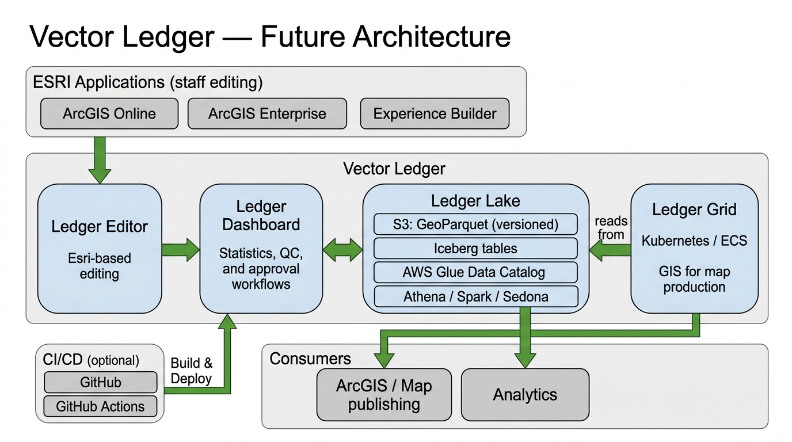
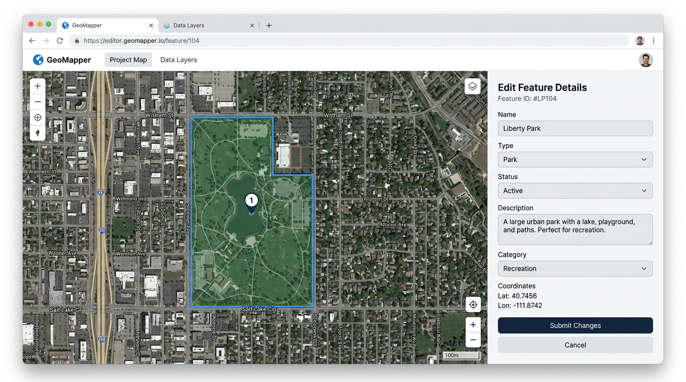
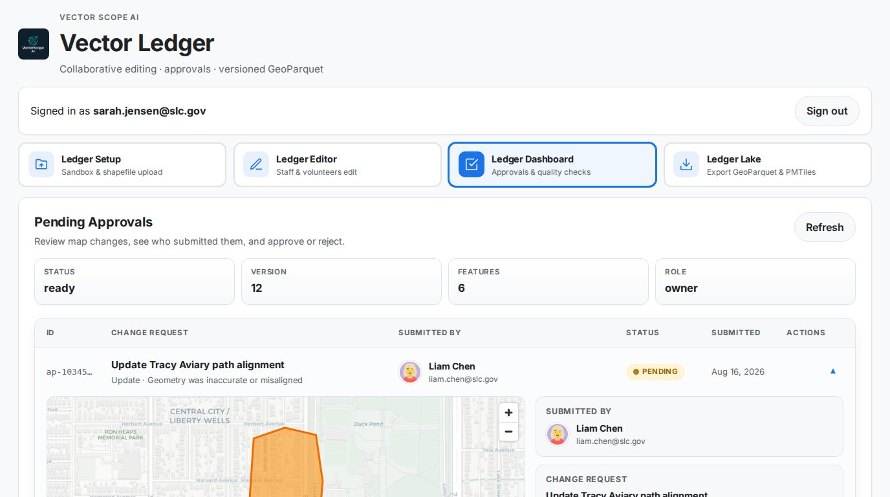
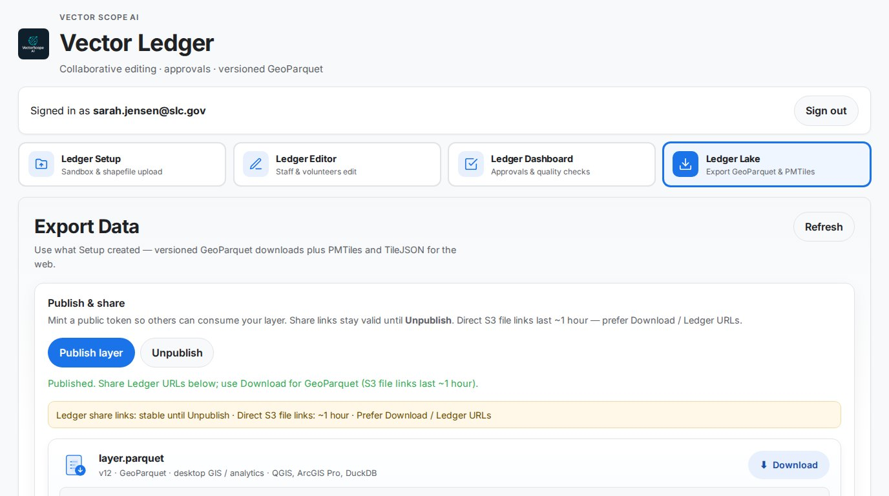
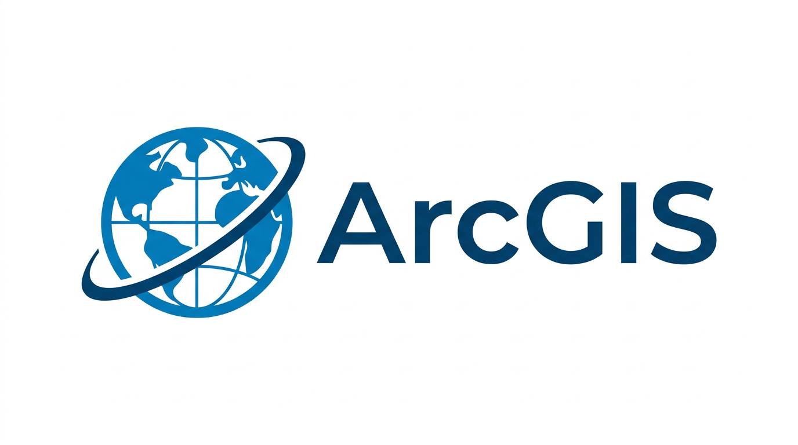
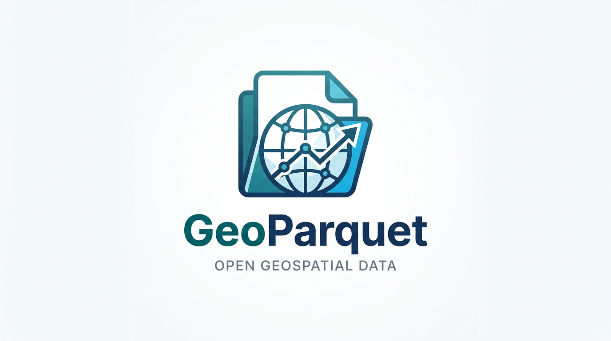
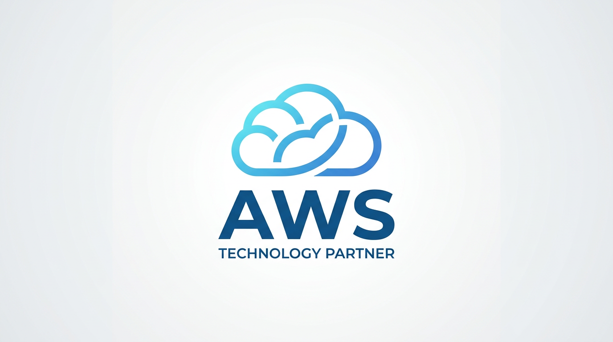

Collaborative Map Updates for Agencies & Organizations
Non-technical staff and partners update official geospatial data through simple Esri web apps. We handle validation, versioning, and deliver clean GeoParquet files for analytics and archiving.
The missing lakehouse layer for ArcGIS: collaborative editing on Iceberg and GeoParquet, with containerized GIS—so your Spark/Sedona data lakes work with ArcGIS Online.
Agencies get authoritative map data updated by real people, delivered as modern GeoParquet files.
No Esri partner ships Iceberg + wiki editing + GeoParquet for ArcGIS today—we do. Esri community has 100+ votes on Sedona/Iceberg ideas (source: Esri ArcGIS Ideas). Vector Ledger is the bridge between your Spark/Sedona/Iceberg data lakes and collaborative editing in ArcGIS.
Vector Ledger stores every approved edit as versioned GeoParquet (and optionally Apache Iceberg) in your data lake, enabling Spark/Sedona/Athena geospatial analytics while ArcGIS remains the editing and publishing environment.
Four parts work together: Ledger Editor (Esri-based editing for staff), Ledger Dashboard (statistics, data viewing, approval and QC), Ledger Lake (versioned GeoParquet storage), and Ledger Grid (Kubernetes running GIS for map production).

Future architecture: ESRI web apps → Ledger Editor → Ledger Lake (GeoParquet/Iceberg on AWS) → Ledger Dashboard & Ledger Grid → ArcGIS and analytics.



Ledger Editor: Staff & volunteers edit via Esri web apps (no GIS skills needed)
Ledger Dashboard: Statistics, data viewing, quality checks & approval workflows
Ledger Lake: Every change saved as versioned GeoParquet files
Ledger Grid: Kubernetes runs GIS software for map production
Works with your existing ArcGIS Online/Enterprise
No database lock-in, instant analytics compatibility
Open Vector Ledger AppStaff & partners edit via guided Esri web apps and forms
View statistics and data, review changes, run QC, approve updates
Versioned GeoParquet for analytics, sharing, archiving

ArcGIS Online/Enterprise
GeoParquet
AWSEsri web apps meet open-standard GeoParquet and Iceberg. Kubernetes runs GIS for map production. Your data stays portable, scalable, and analytics-ready.
3000+ resorts, live web editing, versioned data.
Same workflow available for agency data (boundaries, infrastructure, program areas). Our first vertical: ski resorts & communities.

Who else? CARTO and Wherobots push Iceberg + GeoParquet as data platforms—but not as “Esri + lakehouse collaboration.” Most agencies DIY or have nothing.
Vector Ledger: First Esri-aligned partner doing Iceberg + collaborative editing + GeoParquet for ArcGIS.
Moat: Working product, not just a diagram—Esri sync, approval workflows, deployment support.
Boundary updates, infrastructure tracking, service areas, program mapping—any authoritative geospatial data your organization maintains.
Jonathan Witcoski
Founder & GIS Architect
15+ years federal GIS contracting (CDC, Census, ARNG, DHS). Python ETL, AWS serverless, geospatial automation expert. Building tools that make agencies move faster.
License $10K–$30K/year + implementation $15K–$40K per deployment. Pilot engagements (free or discounted) available. Send a message below and we’ll get back to you.